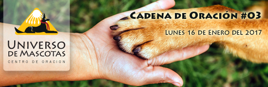
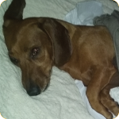
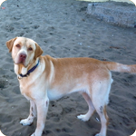
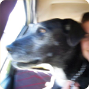

|

|
|
¡Estimado *|FNAME|*, oremos por:
|
|  |
Monti:
Es un perro salchicha y lamentablemente, desde hace un tiempo se encuentra con parálisis en las 4 patas. El se encuentra haciendo un tratamiento farmacológico con el veterinario ademaás de fisioterapia
Mariela, su madre, se siente muy mal y quiere que se mejore. Uámonos en oracón por Monti, para que pueda sobreponerse de la mejor manera. |
|  |
Aslan:
Natalia nos comenta, que Aslna, tiene displaxia de cadera, y los resultados de las placas indican que tiene roto las dos patas traseras,y esta sujeto a operación.
y quisiera ver x otro lado gracias |
|  |
Nasdak:
Es un gran danes que hoy estaría cumpliendo 13 años, presentaba problemas en las caderas y lamentablemente en noche vieja calló por las escaleras, su familia lo encontró, por desgracia, a la mañana del día siguiente. Logró recuperarse pero a los días comenzó a tener malestares y lamentablemente el día Jueves Nasdak falleció.
Unámonos en oración para que donde sea que se encuentre Nasdak se encuentre felíz.
|
|